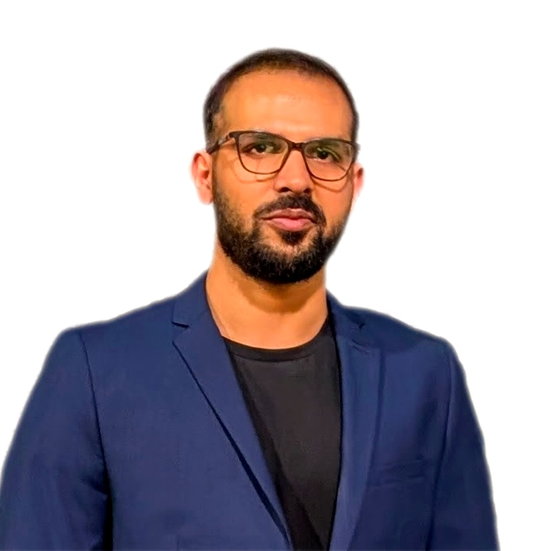

KNOWLEDGE SYSTEMS2026
Team Policy Assistant
Role-protected policy Q&A with asynchronous document ingestion, cited answers, and explicit fallback when evidence is weak.
PDF / Markdown→Retrieval→Cited answers
Explore repository ↗
/ Software EngineerGERMANY
Muhammad Farzaib Khan
I build enterprise software and practical AI tools—from modern .NET platforms to retrieval systems and coding-agent evaluations.
01 / SELECTED WORK
A selection of personal projects across AI,
developer tooling, and systems engineering.
Role-protected policy Q&A with asynchronous document ingestion, cited answers, and explicit fallback when evidence is weak.
A retrieval prototype combining BM25 keyword search, dense vector search, and reranking with cited answer generation and citation verification.
Explore repository ↗A Planner/Coder/Critic agent and an 18-task benchmark with hidden grading tests. Tracks pass rate, cost, latency, and failure reasons.
Explore repository ↗An evaluation framework comparing bare, minimal, and engineered prompts across providers, with automated scoring and per-model HTML reports.
Explore repository ↗A C++17 streaming-quality monitor measuring frame latency, dropped frames, read errors, and bitrate through live JSON metrics and an HTTP dashboard.
Explore repository ↗02 / EXPERIENCE
Enterprise platforms, modernization,
and AI integrated into everyday workflows.
Software Engineer · Working Student
DDS-Digital Data Systems GmbH
Modernized legacy applications and built internal tools with Blazor and .NET 9. Developed MCP agents, document-processing APIs, forecasting dashboards, and OIDC integrations.
Software Engineer
Built enterprise frameworks, cloud-native microservices, and authentication integrations. Modernized the core framework to .NET 8 and migrated desktop workflows to Angular and NgRx.
Previously: Software Engineer Trainee at NetSol (May–Jul 2021) · Intern at Pakistan Civil Aviation Authority (Jul–Aug 2019).
03 / ABOUT
I’m a software engineer based in Germany, pursuing an MSc in Global Software Development at Hochschule Fulda. My work spans enterprise systems, modern web applications, and applied AI.
I’m interested in how intelligent tools earn their place in real workflows: useful retrieval, clear evidence, reliable integrations, and measurable quality.
MSc · Global Software Development
Hochschule Fulda · 2024–2027 (expected)
BSc · Computer Science
FAST-NU · 2017–2021
MY TOOLBOX
English · Fluent / German · B1
Urdu / Hindi · Native
LET’S CONNECT